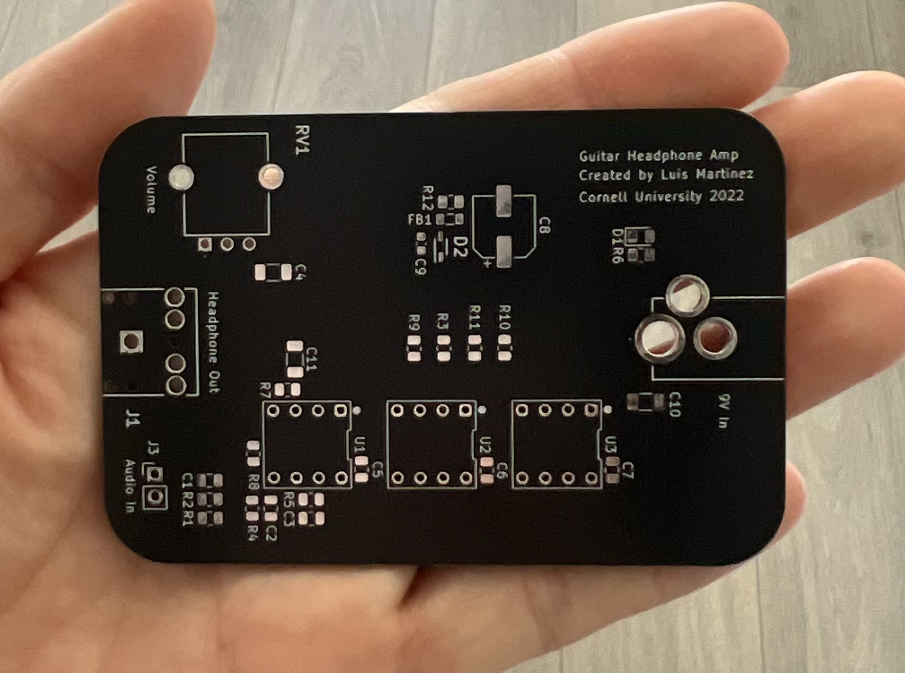
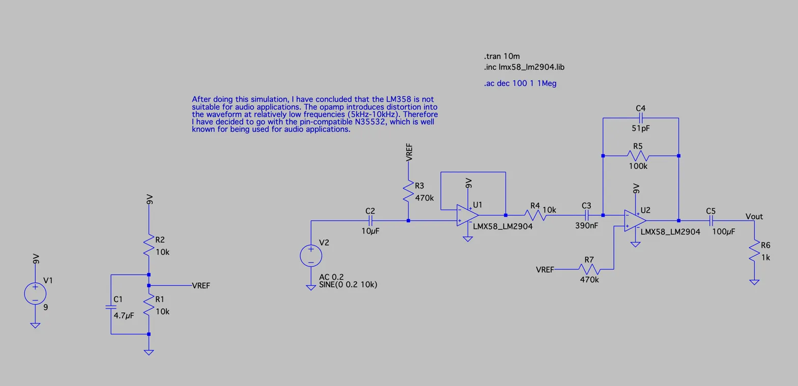
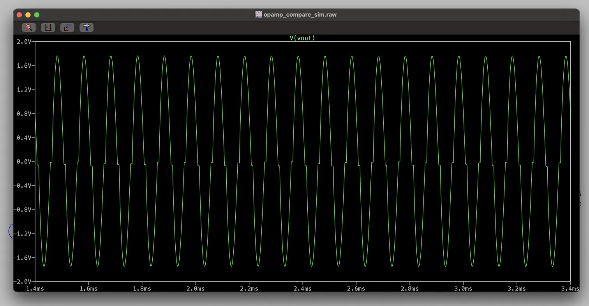
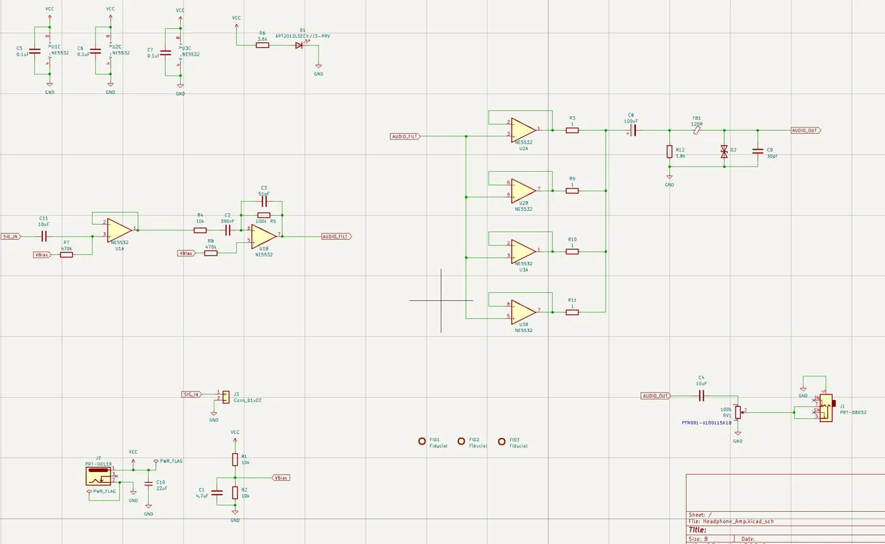
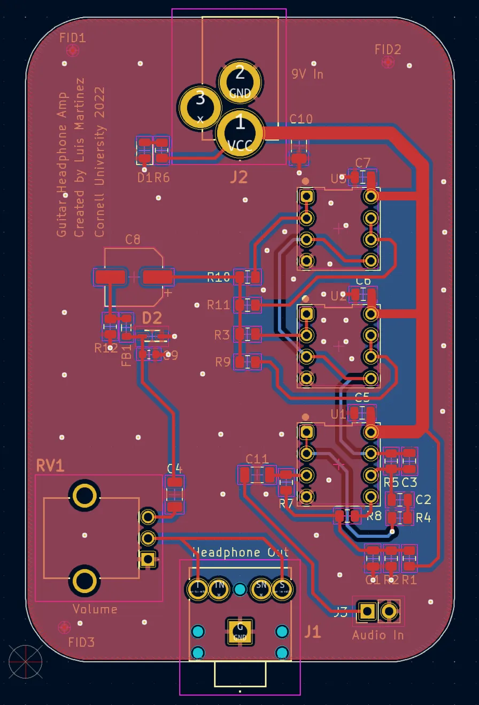
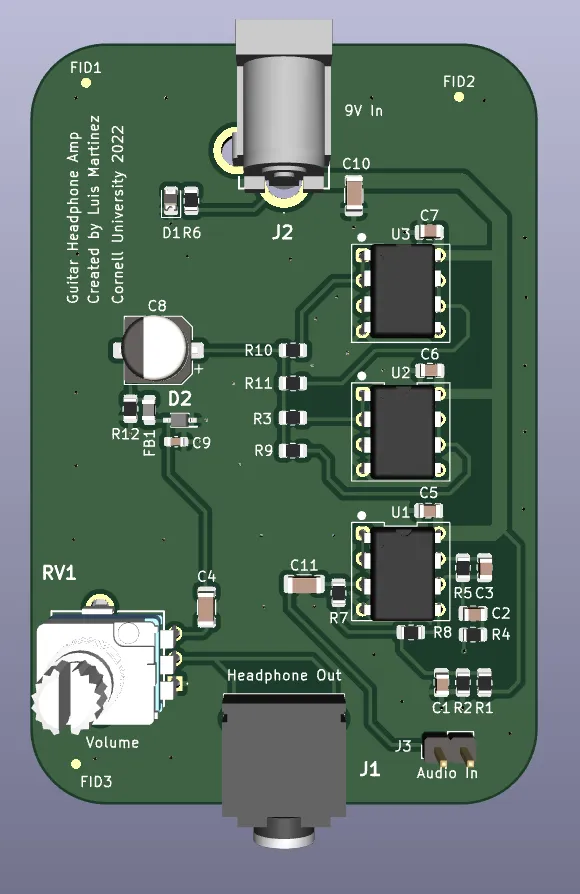

PCB Design · Analog Audio
A compact guitar headphone amplifier designed from scratch — schematic, simulation, layout, and bring-up. Plug your electric guitar in one end, a standard 4.5mm headphone into the other, and dial in volume with the on-board potentiometer. Powered by a single 9V battery via a DC barrel jack.

At a Glance
Audio Path Overview
Virtual ground at VCC/2 allows single-supply operation. Coupling caps block DC from headphones.
From Simulation to Board
This project started as a way to practice playing guitar late at night without bothering anyone. The requirement was simple: low noise, flat frequency response across the audible band, and enough drive current to push a pair of headphones to a comfortable volume.
The initial design used the common LM358 dual op amp. Running LTSpice transient and AC simulations quickly revealed a serious problem: the LM358 introduces noticeable crossover distortion at frequencies as low as 5–10 kHz — well within the audible range and far too early for an audio application. The simulated output waveform showed characteristic "notching" near the zero crossing at mid-to-high audio frequencies.
Headphones present a relatively low impedance load (~32Ω typical). Rather than use a discrete output buffer transistor stage, four NE5532 op amp sections are wired in parallel at the output. This multiplies the available output current by four while averaging out individual op amp noise — a clean way to get more drive without adding complexity or BJT-related design headaches.
The 2-layer board was laid out in KiCAD. Power and ground planes on the back copper help with noise rejection. Decoupling caps are placed directly at each op amp supply pin. A ferrite bead (FB1) and protection diode (D2) guard the audio output. The barrel jack, potentiometer, and both audio jacks are positioned at the board edges for easy panel mounting.
LTSpice — LM358 vs NE5532


Full Circuit Diagram

Key nets: SIG_IN → AUDIO_FILT → AUDIO_OUT · VBias sets virtual ground at VCC/2
KiCAD Design Files


What's Next
The project is functionally finished, but there are still things I would like to measure and evaluate or improve on such as: